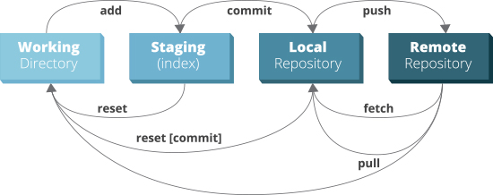
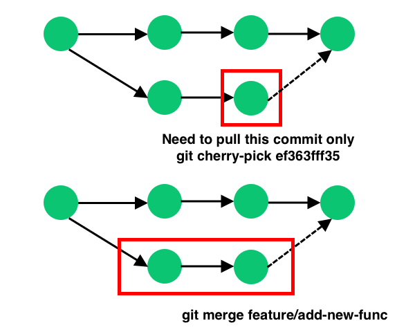
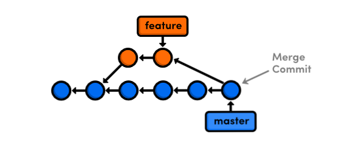
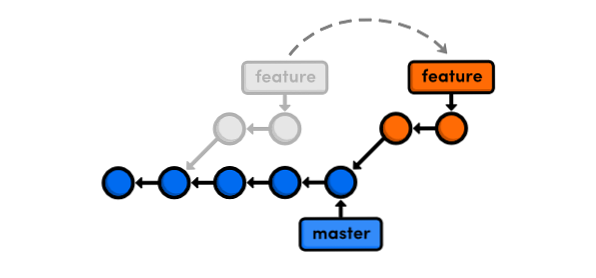

GIT¶
github¶
github markdown¶
emoji’s¶
text¶
It's very easy to make some words **bold** and other words *italic* with Markdown.
You can even [link to Google!](http://google.com)
headers¶
# This is an <h1> tag
## This is an <h2> tag
###### This is an <h6> tag
emphasis¶
*This text will be italic*
_This will also be italic_
**This text will be bold**
__This will also be bold__
_You **can** combine them_
lists¶
unordered¶
* Item 1
* Item 2
* Item 2a
* Item 2b
ordered¶
1. Item 1
1. Item 2
1. Item 3
1. Item 3a
1. Item 3b
images¶

links¶
http://github.com - automatic!
[GitHub](http://github.com)
blockquotes¶
As Kanye West said:
> We're living the future so
> the present is our past.
inline code¶
I think you should use an
`<addr>` element here instead
syntax highlighting¶
```javascript
function fancyAlert(arg) {
if(arg) {
$.facebox({div:'#foo'})
}
}
```
Note
or simply indent code with 4 spaces
task lists¶
- [x] @mentions, #refs, [links](), **formatting**, and <del>tags</del> supported
- [x] list syntax required (any unordered or ordered list supported)
- [x] this is a complete item
- [ ] this is an incomplete item
tables¶
First Header | Second Header
------------ | -------------
Content from cell 1 | Content from cell 2
Content in 1st column | Content 2nd column
becomes:
First Header |
Second Header |
|---|---|
Content from cell 1 |
Content from cell 2 |
Content in 1st column |
Content 2nd column |
rest api¶
links¶
github api documentation
github cli¶
install github cli¶
curl -fsSL https://cli.github.com/packages/githubcli-archive-keyring.gpg | sudo gpg --dearmor -o /usr/share/keyrings/githubcli-archive-keyring.gpg
echo "deb [arch=$(dpkg --print-architecture) signed-by=/usr/share/keyrings/githubcli-archive-keyring.gpg] https://cli.github.com/packages stable main" | sudo tee /etc/apt/sources.list.d/github-cli.list > /dev/null
sudo apt update
sudo apt install gh
initialize gh cli¶
generate token: https://github.com/settings/tokens
gh config set -h github.com git_protocol ssh
gh auth login --hostname github.com
dadude@dahost:~/becode$ gh auth login --hostname github.com
? You're already logged into github.com. Do you want to re-authenticate? Yes
? What is your preferred protocol for Git operations? SSH
? Upload your SSH public key to your GitHub account? /home/dadude/.ssh/github_id_rsa.pub
? How would you like to authenticate GitHub CLI? Paste an authentication token
Tip: you can generate a Personal Access Token here https://github.com/settings/tokens
The minimum required scopes are 'repo', 'read:org', 'admin:public_key'.
? Paste your authentication token: ****************************************
- gh config set -h github.com git_protocol ssh
✓ Configured git protocol
cli help¶
(helloworld) dadude@dahost:~/becode$ gh help
Work seamlessly with GitHub from the command line.
USAGE
gh <command> <subcommand> [flags]
CORE COMMANDS
gist: Manage gists
issue: Manage issues
pr: Manage pull requests
release: Manage GitHub releases
repo: Create, clone, fork, and view repositories
ACTIONS COMMANDS
actions: Learn about working with GitHub actions
run: View details about workflow runs
workflow: View details about GitHub Actions workflows
ADDITIONAL COMMANDS
alias: Create command shortcuts
api: Make an authenticated GitHub API request
auth: Login, logout, and refresh your authentication
completion: Generate shell completion scripts
config: Manage configuration for gh
help: Help about any command
secret: Manage GitHub secrets
ssh-key: Manage SSH keys
FLAGS
--help Show help for command
--version Show gh version
EXAMPLES
$ gh issue create
$ gh repo clone cli/cli
$ gh pr checkout 321
ENVIRONMENT VARIABLES
See 'gh help environment' for the list of supported environment variables.
LEARN MORE
Use 'gh <command> <subcommand> --help' for more information about a command.
Read the manual at https://cli.github.com/manual
FEEDBACK
Open an issue using 'gh issue create -R github.com/cli/cli'
(helloworld) dadude@dahost:~/becode$ gh help ssh-key
Manage SSH keys registered with your GitHub account
USAGE
gh ssh-key <command> [flags]
CORE COMMANDS
add: Add an SSH key to your GitHub account
list: Lists SSH keys in your GitHub account
INHERITED FLAGS
--help Show help for command
LEARN MORE
Use 'gh <command> <subcommand> --help' for more information about a command.
Read the manual at https://cli.github.com/manual
extending cli¶
Create shorthands using gh alias set
Make custom API queries using gh api
Use environment github variables
example of alias use¶
# Variables and API Keys
GITHUB_USER=""
GITHUB_TOKEN=""
PROJECT_NAME=""
COLLABORATOR=""
COLLABORATOR_TOKEN=""
# Aliases and Functions
jsonVal() {
python3 -c "import sys, json; print(json.load(sys.stdin)[\"$1\"])";
}
gh alias set collaborator 'api --method=PUT "repos/$1/collaborators/$2"'
gh auth login --with-token <<< $GITHUB_TOKEN
# A) Add a User
gh collaborator "$GITHUB_USER/$PROJECT_NAME" $COLLABORATOR
# B) Add and Confirm a User
INVITE_URL=$(gh collaborator "$GITHUB_USER/$PROJECT_NAME" $COLLABORATOR | jsonVal "url")
gh api --method=PATCH -H="Authorization: token $COLLABORATOR_TOKEN" "$INVITE_URL"
get collaborators¶
dadude@dahost:~/becode/exquisite-corpse-patrick-brunswyck$ gh api -H 'Accept: application/vnd.github.v3.raw+json' https://api.github.com/orgs/becodeorg/teams/gnt-arai-2-31/members | jq '.[] | .login, .id'
"brunswyck"
5129017
"minhhienvo368"
10606644
"mdifils"
38662421
"JacquesDeclercq"
41050093
"JayeshItaliya86"
58531559
"Roldan87"
69901608
"ibe-denaux"
70886156
"lvendrix"
74897663
"BMesm"
78888578
"QuintenMM"
84379913
"MaartenVdBulcke"
84380029
"ltadrummond"
84380184
"AmauryvanKeste"
84380197
"annejungers"
84380205
"matthew-samyn"
84380381
"GracielaLopezRosson"
84380495
"Helabrak"
84380899
"Minh6019"
84381447
set new collaborator on repo¶
gh api --method=PUT https://api.github.com/repos/brunswyck/exquisite-corpse-patrick-brunswyck/collaborators/Minh6019
git commands¶
setup new repo¶
local to remote¶
echo "# demo" >> README.md
git init
git add README.md
git commit -m "first commit"
git remote add origin git@github.com:brunswyck/demo.git
git push -u origin master
user specific¶
write to global ~/.gitconfig¶
git config --global user.name "dadude"
git config --global user.email "dadude@users.noreply.github.com"
git config --global core.editor "vim"
git config --list
exercises¶
first one¶
cd Exquisite-corpse-Anne-Jungers/
git pull
git checkout development
git checkout -b dev-patrick-brunswyck development
vim README.md
git commit -am 'said my piece'
git push --set-upstream origin dev-patrick-brunswyck
git checkout development
git pull
git merge development dev-patrick-brunswyck
if conflict: git commit -am 'said my piece'
git push
git branch -av
git branch -d dev-patrick-brunswyck
git push origin --delete dev-patrick-brunswyck
pruning¶
Note
git pull does not remove remote tracking branches for branches deleted from remote repo
SOLUTION: To remove remote tracking branches for deleted branches, you need to issue:
git remote prune origin
If you just want to list such stale branches (and not remove them), use this:
# If you just want to list such stale branches (and not remove them), use this:
git remote prune origin --dry-run
example¶
(master)$ git tag -am 'version-1' mastererror: failed to push some refs to 'git@github.com:lvendrix/Exquisite-corpse-Logan.git'
(main)$ git remote prune origin
Pruning origin
URL: git@github.com:lvendrix/Exquisite-corpse-Logan.git
* [pruned] origin/JacquesDeclercq
* [pruned] origin/dev-patrick-brunswyck
* [pruned] origin/development
* [pruned] origin/jayesh-italiya
* [pruned] origin/maarten
* [pruned] origin/matthew-samyn
* [pruned] origin/patrick-brunswyck
(main)$ git status
On branch main
Your branch is up to date with 'origin/main'.
nothing to commit, working tree clean
(base) dadude@dahost ~/becode/Exquisite-corpse-Logan (main)$ git branch -ar
origin/HEAD -> origin/main
origin/main
(base) dadude@dahost ~/becode/Exquisite-corpse-Logan (main)$ git branch -r
origin/HEAD -> origin/main
origin/main
(master)$ git tag -am 'version-1' master
basic cmds¶
show local & remote branches¶
(docuhub) (base) dadude@dahost:~/gits/docuhub/source$
git branch -av
* main cdd89ff upd8 python file
remotes/origin/HEAD -> origin/main
remotes/origin/gh-pages 6fe8280 Update index.md
remotes/origin/main cdd89ff upd8 python file
git remote show origin
* remote origin
Fetch URL: git@github.com:brunswyck/docuhub.git
Push URL: git@github.com:brunswyck/docuhub.git
HEAD branch: main
Remote branches:
gh-pages tracked
main tracked
Local branch configured for 'git pull':
main merges with remote main
Local ref configured for 'git push':
main pushes to main (fast-forwardable)
get latest changes from origin (no merge)
git fetch
branches¶
show remote¶
git remote show origin
* remote origin
Fetch URL: git@github.com:brunswyck/hellobecode.git
Push URL: git@github.com:brunswyck/hellobecode.git
HEAD branch: main
Remote branches:
gh-pages tracked
main tracked
Local branch configured for 'git pull':
main merges with remote main
Local ref configured for 'git push':
main pushes to main (up to date)
delete remote branch¶
git push origin :branch_u_want_to_delete
# = push nothing to remote branch
git push --delete origin branch_to_delete
Note
origin -> name of remote
git push -d origin branch_to_delete
$ git checkout -b delete_test
Switched to a new branch 'delete_test'
$ git push --help
$ git push -u origin delete_test
Total 0 (delta 0), reused 0 (delta 0)
remote:
remote: Create a pull request for 'delete_test' on GitHub by visiting:
remote: https://github.com/brunswyck/docuhub/pull/new/delete_test
remote:
To github.com:brunswyck/docuhub.git
* [new branch] delete_test -> delete_test
Branch 'delete_test' set up to track remote branch 'delete_test' from 'origin'.
$ git checkout main
M source/git.rst
Switched to branch 'main'
Your branch is up to date with 'origin/main'.
$ git branch -d delete_test
Deleted branch delete_test (was 7734d63).
# delete remote
$ git branch -a
* main
remotes/origin/HEAD -> origin/main
remotes/origin/delete_test
remotes/origin/gh-pages
remotes/origin/main
$ git push -d origin delete_test
To github.com:brunswyck/docuhub.git
- [deleted] delete_test
create new branch from remote branch¶
git branch --track newbranch origin/remotebranch
create new branch in a remote repo¶
git push -u origin localbranch
Note
the -u flag tells git to establish a tracking connection, which will make pushing & pulling easier in the future
id merged branches¶
git branch --merged
prune stale branches¶
Note
a remote tracking branch that no longer tracks anything because the actual branch in the remote repository has been deleted
# Delete stale remote-tracking branches
git remote prune origin (or whatever name of the remote is)
git remote prune origin --dry-run
changed gitignore but folder still in commit¶
you added eg the folder env/ to your .gitignore file but when checking git status you see git still wants to commit all env/lib/… files You can fix that by removing the folder from cache:
git rm -r --cached bin
force local changes on remote master with no merge¶
git push -f <remote> <branch>
git push -f origin master
Force pushing with a “lease” allows the force push to fail if there are new commits on the remote that you didn’t expect (technically, if you haven’t fetched them into your remote-tracking branch yet), which is useful if you don’t want to accidentally overwrite someone else’s commits that you didn’t even know about yet, and you just want to overwrite your own:
git push <remote> <branch> --force-with-lease
load .gitconfig file¶
git config --local include.path "$PWD/.gitconfig"
tagging¶
allows marking points in history as important eg to mark releases (v1.0, v1.1, v2.0)
creating tags¶
lightweight tag¶
git tag docs_ready b10a9141
git log
commit b10a9141177f10805e570234ca63a98b90c973f3 (HEAD -> main, tag: docs_ready, origin/main, origin/HEAD)
Author: dadude <dadude@users.noreply.github.com>
Date: Sun May 23 20:09:41 2021 +0200
lol
annotated tag¶
most common, allows message to go with it
git tag -a v1.1 -m "Version 1.0" dd5c49428a0
git tag -am "Start" v0.01 c66846fddca
git tag -l
docs_ready
v0.01
git tag -ln
docs_ready lol
v0.01 Start
git diff v0.01 0b59801097dc0
diff --git a/docs/_sources/index.rst.txt b/docs/_sources/index.rst.txt
new file mode 100644
index 0000000..d6441b3
--- /dev/null
+++ b/docs/_sources/index.rst.txt
delete tag¶
git tag --delete v0.01
Deleted tag 'v0.01' (was 5608530)
push tags to remote¶
git push origin --tags
Total 0 (delta 0), reused 0 (delta 0)
To github.com:brunswyck/docuhub.git
* [new tag] docs_ready -> docs_ready
Note
Like branches tags are LOCAL UNLESS SHARED TO A REMOTE git push does NOT transfer tags
git fetch does retrieve shared tags
git fetch --tags
delete remote tag¶
# deleting a tag is like with remote branches
git push --delete origin v0.0
git push -d origin v0.0
dadude@dahost:~/gits/demo_repo$ git push -d origin v0.0
To github.com:brunswyck/demo_repo.git
- [deleted] v0.0
git log¶
git log params¶
oneline¶
git log --oneline
3dc70bd (HEAD -> main, origin/main, origin/HEAD) up8 git part
b10a914 (tag: docs_ready) lol
7734d63 git
6ebf24f git change
a04e93b added cmd in git
cdd89ff upd8 python file
41f3f5a reorganized + dark mode
e09a427 Update README.md
85784c4 add files
ac00edf synching docs
graph¶
dadude@dahost:~/gits/demo_repo$ git log --graph --all --decorate
* commit 75ded4d1c8c74e53ed2de232669a789b6fdaf887 (HEAD -> master)
| Author: dadude <dadude@users.noreply.github.com>
| Date: Mon Nov 9 23:58:09 2020 +0100
|
| shopping: added raisins
|
| * commit fb5932d0aaa696f2c5c0e17a4b74bd47c0b86c0c (camping)
| | Author: dadude <dadude@users.noreply.github.com>
| | Date: Mon Nov 9 23:57:00 2020 +0100
| |
| | todo: add camping activities
| |
| * commit e08ce6b890b8494142907c805d1851883afc10a1
|/ Author: dadude <dadude@users.noreply.github.com>
| Date: Mon Nov 9 23:55:48 2020 +0100
|
| todo: add weekend camping
|
* commit 88ad8a2d8be725214cbe451183259b477200d599 (origin/master, origin/HEAD)
| Author: dadude <dadude@users.noreply.github.com>
| Date: Mon Nov 9 17:53:14 2020 +0100
|
| change shopping list
|
dadude@dahost:~/gits/demo_repo$ git log --graph --all --decorate --oneline
* 75ded4d (HEAD -> master) shopping: added raisins
| * fb5932d (camping) todo: add camping activities
| * e08ce6b todo: add weekend camping
|/
* 88ad8a2 (origin/master, origin/HEAD) change shopping list
* b25b676 git commit -p to add red to green apples change
* 9a06a7a add peaches to shopping list
* 140684c changed some files to play with interactive mode
| * c843470 (tester) Update shopping items
| * 0a472b1 Fix typo
| | * adac9c7 (key_feature) changed some files to play with interactive mode
| | * f113994 adding modified shopping list
| | * 677c492 Merge branch 'master' into key_feature
| | |\
| |_|/
|/| |
* | | d5bd16f (tag: 2d1991d525d2137a, prune_test) Specify chicken soup
* | | f8375c5 Edit sugar
* | | 443ea3a Clarify which rice
* | | 4611a0c Add clean closet to do
* | | 676da05 Add limes to shopping list
* | | e24cf05 Update shopping items
* | | 2d1991d Fix typo
|/ /
* | 8527e7a Clarify shopping list
* | ec41a80 Edit shopping list
* | 14584f2 Add butter to shopping list
* | 1a5ae0e Add party invites
| * 94857bb (origin/key_feature) Add file for key feature
| | * 8b03094 (origin/gh-pages) Update index.md
| | * cfbee8c Set theme jekyll-theme-hacker
| | * c123597 (origin/old_topic, old_topic) Add birthday party to do
| |/
|/|
* | a4974b2 Add to do list
|/
* 1d8afcb Added shopping list
* d55bc49 (tag: v0.0) First commit -|
cherry picking¶
cherry-Picking commits¶
Apply changes from one or more existing commits
Go get that commit you already know about, grab its changes, and apply right here
Warning
use cherry-picking rarely as it can create duplicate commits. Use merge/rebase if you can
Note
Cherry-pick should be reserved for cases where this is not possible e.g. when a Hotfix has to be created or when you want to save just one/few commits from an otherwise abandoned branch
# picking one commit
git cherry-pick d4e8411d09
# picking a range of commits
git cherry-pick d4e8411d09..d533459ed9
# you cannot pick a merge commit!
dadude@dahost:~/gits/demo_repo$ git cherry-pick 140684c2167174daccc08681c7ba6bd12c769bbe
Auto-merging shopping.txt
[key_feature adac9c7] changed some files to play with interactive mode
Date: Mon Nov 9 17:22:05 2020 +0100
4 files changed, 4 insertions(+), 2 deletions(-)
dadude@dahost:~/gits/demo_repo$ git log
commit adac9c701a0bcf92062ed363fe03598eacc1e4fe (HEAD -> key_feature)
Author: dadude <dadude@users.noreply.github.com>
Date: Mon Nov 9 17:22:05 2020 +0100
changed some files to play with interactive mode
resolve cherry-picking conflicts¶
modify conflicts in shopping list
git add shopping.txt
git cherry-pick --continue
merge¶
make main great again¶
Merging is Git’s way of putting a forked history back together again. The git merge command lets you take the independent lines of development created by git branch and integrate them into a single branch
Join two or more development histories together
before¶

after¶

how to prepare¶
Execute git status to ensure that HEAD is pointing to the correct merge-receiving branch If needed, execute git checkout to switch to the receiving branch.
Execute git fetch to pull the latest remote commits. Once the fetch is completed ensure the master branch has the latest updates by executing git pull
now run git merge
fast forward merge¶
A fast-forward merge can occur when there is a linear path from the current branch tip to the target branch. Instead of “actually” merging the branches, all Git has to do to integrate the histories is move (i.e., “fast forward”) the current branch tip up to the target branch tip. This effectively combines the histories, since all of the commits reachable from the target branch are now available through the current one.
a fast forward merge of some-feature into master would look something like the following

rebase¶
Take commits from a branch and replay them at the end of another branch Move(replay one by one) commits to the tip of a branch EG master
Useful to integrate recent commits without merging
Maintains a cleaner more linear project history
Ensures topic/feature branch commits apply cleanly
rebase to tip¶
rebase current branch to tip master¶
git rebase master
rebase new_feature branch to tip master¶
git rebase master new_feature
return commit where topic branch diverges¶
git merge-base master camping
$ git merge-base master camping
88ad8a2d8be725214cbe451183259b477200d599
$ git rebase master camping
First, rewinding head to replay your work on top of it...
Applying: todo: add weekend camping
Applying: todo: add camping activities
merge VS rebase¶
2 ways to incorporate changes from one branch into another branch
rebase will change the SHA’s of the feature branch when replaying/recommitting
merging: - adds a merge commit - nondestructive - complete record of what happened and when - easy to undo (hard reset) - logs can become cluttered, non-linear
rebasing: - no additional merge commit - destructive: SHA changes, commits are rewritten - no longer a complete record of what happened and when - tricky to undo - logs are much cleaner, more linear
Warning
DONT REBASE A PUBLIC BRANCH! rebase abandons existing, shared commits & creates new similar commits instead) (collaborators would see the project history vanish)
ONLY ON LOCAL PRIVATE BRANCHES/BRANCHES YOU USE EXCLUSIVELY
how to choose:¶
MERGE to allow commits to stand out or to be clearly grouped
MERGE to bring large topic branches back into master
REBASE to add minor commits in master to a topic branch
REBASE to move commits from one branch to another
MERGE anytime topic branch is already public & used by others
Handle Rebase Conflicts¶
rebasing creates new commits on existing code
may conflict with existing code
git pauses rebase before each conflicting commit (until end of the line)
resolve with: git rebase –continue git rebase –skip (throw out this one commit eg it already contains the change) git rebase –abort (stop rebase)
$ git rebase master camping
First, rewinding head to replay your work on top of it...
Applying: todo: add weekend camping
Using index info to reconstruct a base tree...
M to_do.txt
Falling back to patching base and 3-way merge...
Auto-merging to_do.txt
CONFLICT (content): Merge conflict in to_do.txt
error: Failed to merge in the changes.
Patch failed at 0001 todo: add weekend camping
hint: Use 'git am --show-current-patch' to see the failed patch
Resolve all conflicts manually, mark them as resolved with
"git add/rm <conflicted_files>", then run "git rebase --continue".
You can instead skip this commit: run "git rebase --skip".
To abort and get back to the state before "git rebase", run "git rebase --abort".
$ vim to_do.txt
$ git status
rebase in progress; onto dde87e7
You are currently rebasing branch 'camping' on 'dde87e7'.
(fix conflicts and then run "git rebase --continue")
(use "git rebase --skip" to skip this patch)
(use "git rebase --abort" to check out the original branch)
Unmerged paths:
(use "git restore --staged <file>..." to unstage)
(use "git add <file>..." to mark resolution)
both modified: to_do.txt
no changes added to commit (use "git add" and/or "git commit -a")
$ git add to_do.txt
$ git rebase --continue
Applying: todo: add weekend camping
Applying: todo: add camping activities
Using index info to reconstruct a base tree...
M to_do.txt
Falling back to patching base and 3-way merge...
Auto-merging to_do.txt
$ git log --graph --all --decorate --oneline
* f6b0203 (HEAD -> camping) todo: add camping activities
* f8aa13f todo: add weekend camping
* dde87e7 (master) todo clean out drawers
* 75ded4d shopping: added raisins
* 88ad8a2 (origin/master, origin/HEAD) change shopping list
* b25b676 git commit -p to add red to green apples change
* 9a06a7a add peaches to shopping list
* 140684c changed some files to play with interactive mode
| * c843470 (tester) Update shopping items
| * 0a472b1 Fix typo
| | * adac9c7 (key_feature) changed some files to play with interactive mode
| | * f113994 adding modified shopping list
| | * 677c492 Merge branch 'master' into key_feature
| | |\
| |_|/
|/| |
* | | d5bd16f (tag: 2d1991d525d2137a, prune_test) Specify chicken soup
* | | f8375c5 Edit sugar
* | | 443ea3a Clarify which rice
* | | 4611a0c Add clean closet to do
* | | 676da05 Add limes to shopping list
* | | e24cf05 Update shopping items
* | | 2d1991d Fix typo
|/ /
* | 8527e7a Clarify shopping list
* | ec41a80 Edit shopping list
* | 14584f2 Add butter to shopping list
* | 1a5ae0e Add party invites
| * 94857bb (origin/key_feature) Add file for key feature
| | * 8b03094 (origin/gh-pages) Update index.md
| | * cfbee8c Set theme jekyll-theme-hacker
| | * c123597 (origin/old_topic, old_topic) Add birthday party to do
| |/
|/|
* | a4974b2 Add to do list
|/
* 1d8afcb Added shopping list
* d55bc49 (tag: v0.0) First commit
dadude@dahost:~/gits/demo_repo$ git show f8aa13f
commit f8aa13f0051488cd3163a147ba154f58da746b5b
Author: dadude <dadude@users.noreply.github.com>
Date: Mon Nov 9 23:55:48 2020 +0100
todo: add weekend camping -|
rebasing onto other branches¶
git rebase --onto newbase upstream(oldbranch) branch
git rebase --onto master ecommerce new_feature
Take new_feature branch - take it off ecommerce -and move it onto master branch
$ vim expenses.txt
$ git add expenses.txt
$ git commit -m "add file for expenses"
[expenses 47d5d68] add file for expenses
1 file changed, 4 insertions(+)
create mode 100644 expenses.txt
$ git log --graph --all --decorate --oneline
* 47d5d68 (HEAD -> expenses) add file for expenses
* f6b0203 (camping) todo: add camping activities
$ git rebase --onto=master camping expenses
First, rewinding head to replay your work on top of it...
Applying: add file for expenses
$ git log --graph --all --decorate --oneline
* 054724b (HEAD -> expenses) add file for expenses
| * f6b0203 (camping) todo: add camping activities
| * f8aa13f todo: add weekend camping
|/
* dde87e7 (master) todo clean out drawers
* 75ded4d shopping: added raisins -|
undo a rebase¶
can undo simple rebases
rebase is destructive
SHAs, commit msgs, change sets, and more
undoing complex rebases may lose data
# ORIG_HEAD is used by git to change back to how things were during # rebase, reset, merge change git reset –hard ORIG_HEAD
# do another rebase to former merge-base SHA git rebase –onto 9291f0c88 master new_feature
$ git log --graph --all --decorate --oneline
* 054724b (HEAD -> expenses) add file for expenses
| * f6b0203 (camping) todo: add camping activities
| * f8aa13f todo: add weekend camping
|/
* dde87e7 (master) todo clean out drawers
* 75ded4d shopping: added raisins
* 88ad8a2 (origin/master, origin/HEAD) change shopping list
* b25b676 git commit -p to add red to green apples change
* 9a06a7a add peaches to shopping list
* 140684c changed some files to play with interactive mode
| * c843470 (tester) Update shopping items
| * 0a472b1 Fix typo
| | * adac9c7 (key_feature) changed some files to play with interactive mode
| | * f113994 adding modified shopping list
| | * 677c492 Merge branch 'master' into key_feature
| | |\
| |_|/
|/| |
$ git reset --hard ORIG_HEAD
HEAD is now at dde87e7 todo clean out drawers
$ git log --graph --all --decorate --oneline
* f6b0203 (camping) todo: add camping activities
* f8aa13f todo: add weekend camping
* dde87e7 (HEAD -> expenses, master) todo clean out drawers
* 75ded4d shopping: added raisins
* 88ad8a2 (origin/master, origin/HEAD) change shopping list
* b25b676 git commit -p to add red to green apples change
* 9a06a7a add peaches to shopping list
* 140684c changed some files to play with interactive mode
| * c843470 (tester) Update shopping items
| * 0a472b1 Fix typo
| | * adac9c7 (key_feature) changed some files to play with interactive mode
| | * f113994 adding modified shopping list
| | * 677c492 Merge branch 'master' into key_feature
| | |\
| |_|/
|/| |
Interactive Rebasing¶
Chance to modify commits as they are being replayed
git creates a todo list of what its gonna do during rebase
opens the git-rebase-todo file and pause for editing
can reorder or skip commits
can edit commit contents
choices: - pick, drop - reword, edit commit - squash (them together), fixup - exec (shell)
interactive rebase
git rebase -i master new_feature
$ git rebase -i --onto=master camping expenses
Successfully rebased and updated refs/heads/expenses.
p, pick <commit> = use commit
# r, reword <commit> = use commit, but edit the commit message
# e, edit <commit> = use commit, but stop for amending
# s, squash <commit> = use commit, but meld into previous commit
# f, fixup <commit> = like "squash", but discard this commit's log message
# x, exec <command> = run command (the rest of the line) using shell
# b, break = stop here (continue rebase later with 'git rebase --continue')
# d, drop <commit> = remove commit
# l, label <label> = label current HEAD with a name
# t, reset <label> = reset HEAD to a label
# m, merge [-C <commit> | -c <commit>] <label> [# <oneline>]
# . create a merge commit using the original merge commit's
# . message (or the oneline, if no original merge commit was
# . specified). Use -c <commit> to reword the commit message.
# edit commits without moving them to a new merge-base
git rebase -i HEAD~3
# useful for reediting commits on a local branch
squash commits¶
cleanup history a bit
fold two ore more commits into one
squash: combine change sets, concatenate msgs
fixup: combine change sets, discard this msg
uses first author in the commit series!
# eg change pick to squash or fixup, one at the top has to be pick
dadude@dahost:~/gits/demo_repo$ git rebase -i HEAD~3
[detached HEAD cbd1913] change shopping list
Date: Mon Nov 9 17:53:14 2020 +0100
2 files changed, 7 insertions(+), 3 deletions(-)
Successfully rebased and updated refs/heads/expenses.
pull rebase¶
COMBINING REBASE WITH A PULL
Fetch from remote, then rebase instead of merging
Keeps history cleaner by reducing merge commits
ONLY US ON LOCAL COMMITS not shared to a remote
(take my changes and keep moving it down the timeline to the tip)
git pull --rebase
git pull --rebase=preserve
git pull --rebase=interactive
manually change shopping.txt on github itself to sim collaborator
dadude@dahost:~/gits/demo_repo$ git pull --rebase
remote: Enumerating objects: 3, done.
remote: Counting objects: 100% (3/3), done.
remote: Compressing objects: 100% (3/3), done.
remote: Total 3 (delta 0), reused 0 (delta 0), pack-reused 0
Unpacking objects: 100% (3/3), 938 bytes | 938.00 KiB/s, done.
From github.com:brunswyck/demo_repo
dde87e7..296ca26 master -> origin/master
First, rewinding head to replay your work on top of it...
Applying: what grapes to buy
dadude@dahost:~/gits/demo_repo$ git log --graph --all --decorate --oneline
* 3af24a3 (HEAD -> master) what grapes to buy
* 296ca26 (origin/master, origin/HEAD) Update shopping.txt
| * cbd1913 (expenses) change shopping list
| | * f6b0203 (camping) todo: add camping activities
| | * f8aa13f todo: add weekend camping
| |/
|/|
* | dde87e7 todo clean out drawers
troubleshooting¶
Log options¶
log is the primary interface to Git
log has many options: Sorting, filtering, output formatting
git help log (PRACTICE THIS!)
git log -p
git log --patch
show relevant commits¶
git log -L 100,150:filename.txt
$ git log -L 1,5:shopping.txt
commit 88ad8a2d8be725214cbe451183259b477200d599
Author: dadude <dadude@users.noreply.github.com>
Date: Mon Nov 9 17:53:14 2020 +0100
change shopping list
diff --git a/shopping.txt b/shopping.txt
--- a/shopping.txt
+++ b/shopping.txt
@@ -1,5 +1,5 @@
Shopping List
green apples
-6 bananas
+7 bananas
vanilla yogurt
commit b25b676822b700730f1dd4d88021d3be97ef4efb
Author: dadude <dadude@users.noreply.github.com>
Date: Mon Nov 9 17:30:52 2020 +0100
git commit -p to add red to green apples change
diff --git a/shopping.txt b/shopping.txt
--- a/shopping.txt
+++ b/shopping.txt
@@ -1,5 +1,5 @@
Shopping List
blame¶
Browse annotated file
Determine who changed what lines in a file and why
Useful for probing the history behind a file’s contents
Useful for identifying what commit introduced a bug
$ git blame shopping.txt
1d8afcb9 (Kevin Skoglund 2018-01-23 15:55:13 -0500 1) Shopping List
1d8afcb9 (Kevin Skoglund 2018-01-23 15:55:13 -0500 2)
b25b6768 (dadude 2020-11-09 17:30:52 +0100 3) green apples
88ad8a2d (dadude 2020-11-09 17:53:14 +0100 4) 7 bananas
e24cf053 (Kevin Skoglund 2018-01-26 10:59:25 -0500 5) vanilla yogurt
88ad8a2d (dadude 2020-11-09 17:53:14 +0100 6) 3% milk
88ad8a2d (dadude 2020-11-09 17:53:14 +0100 7) white bread
1d8afcb9 (Kevin Skoglund 2018-01-23 15:55:13 -0500 8) cereal
140684c2 (dadude 2020-11-09 17:22:05 +0100 9) 14 eggs
1d8afcb9 (Kevin Skoglund 2018-01-23 15:55:13 -0500 10) bacon
1d8afcb9 (Kevin Skoglund 2018-01-23 15:55:13 -0500 11) orange juice
3af24a35 (dadude 2020-11-10 01:10:48 +0100 12) red grapes
selected lines¶
git blame -L 10,15 filename.txt
dadude@dahost:~/gits/demo_repo$ git blame -L 10,15 shopping.txt
1d8afcb9 (Kevin Skoglund 2018-01-23 15:55:13 -0500 10) bacon
1d8afcb9 (Kevin Skoglund 2018-01-23 15:55:13 -0500 11) orange juice
3af24a35 (dadude 2020-11-10 01:10:48 +0100 12) red grapes
1d8afcb9 (Kevin Skoglund 2018-01-23 15:55:13 -0500 13) lemons
676da05f (Kevin Skoglund 2018-01-31 13:46:43 -0500 14) limes
1d8afcb9 (Kevin Skoglund 2018-01-23 15:55:13 -0500 15) lettuce
dadude@dahost:~/gits/demo_repo$ git blame -L 5,+5 shopping.txt
e24cf053 (Kevin Skoglund 2018-01-26 10:59:25 -0500 5) vanilla yogurt
88ad8a2d (dadude 2020-11-09 17:53:14 +0100 6) 3% milk
88ad8a2d (dadude 2020-11-09 17:53:14 +0100 7) white bread
1d8afcb9 (Kevin Skoglund 2018-01-23 15:55:13 -0500 8) cereal
140684c2 (dadude 2020-11-09 17:22:05 +0100 9) 14 eggs
dadude@dahost:~/gits/demo_repo$ git blame 1d8afcb9 shopping.txt
1d8afcb9 (Kevin Skoglund 2018-01-23 15:55:13 -0500 1) Shopping List
1d8afcb9 (Kevin Skoglund 2018-01-23 15:55:13 -0500 2)
1d8afcb9 (Kevin Skoglund 2018-01-23 15:55:13 -0500 3) apples
1d8afcb9 (Kevin Skoglund 2018-01-23 15:55:13 -0500 4) bananas
1d8afcb9 (Kevin Skoglund 2018-01-23 15:55:13 -0500 5) yogurt
1d8afcb9 (Kevin Skoglund 2018-01-23 15:55:13 -0500 6) milk
1d8afcb9 (Kevin Skoglund 2018-01-23 15:55:13 -0500 7) bread
git config --global alias.praise blame
bisect¶
Find commit that introduced a bug or regression
Mark last known good revision and first bad revision
Resets code to mid-point
Repeat (become last known good or bad revision)
git bisect start
# current version is bad
git bisect bad <treeish> (branch sha)
# this commit/tag is known to be good
git bisect good v1.2.3
# After a bisect session
# to clean up the bisection state and return to the original HEAD:
git bisect reset
dadude@dahost:~/gits/demo_repo$ git bisect start
dadude@dahost:~/gits/demo_repo$ git bisect bad
dadude@dahost:~/gits/demo_repo$ git bisect good 1a5ae0e
Bisecting: 8 revisions left to test after this (roughly 3 steps)
[f8375c55a593c01cc7b65f1f64605a1913ebfdf9] Edit sugar
dadude@dahost:~/gits/demo_repo$ git bisect bad
Bisecting: 4 revisions left to test after this (roughly 2 steps)
[2d1991d525d2137a876883445b577cd223d182f8] Fix typo
dadude@dahost:~/gits/demo_repo$ git bisect good
Bisecting: 2 revisions left to test after this (roughly 1 step)
[676da05fbf1bfa7ad1baa32fa470e7ec0f4102b1] Add limes to shopping list
dadude@dahost:~/gits/demo_repo$ git bisect bad
Bisecting: 0 revisions left to test after this (roughly 0 steps)
[e24cf053950621f542ac192b771c74ecf53cdf3f] Update shopping items
dadude@dahost:~/gits/demo_repo$ git bisect good
676da05fbf1bfa7ad1baa32fa470e7ec0f4102b1 is the first bad commit
commit 676da05fbf1bfa7ad1baa32fa470e7ec0f4102b1
Author: Kevin Skoglund <someone@nowhere.com>
Date: Wed Jan 31 13:46:43 2018 -0500
Add limes to shopping list
shopping.txt | 1 +
1 file changed, 1 insertion(+)
dadude@dahost:~/gits/demo_repo$ git bisect reset
Previous HEAD position was e24cf05 Update shopping items
Switched to branch 'master'
Your branch is ahead of 'origin/master' by 1 commit.
(use "git push" to publish your local commits)